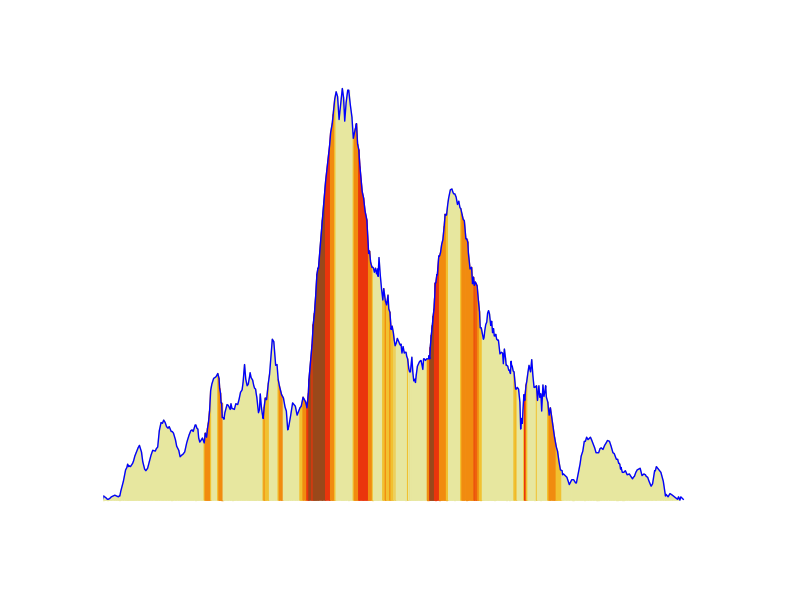
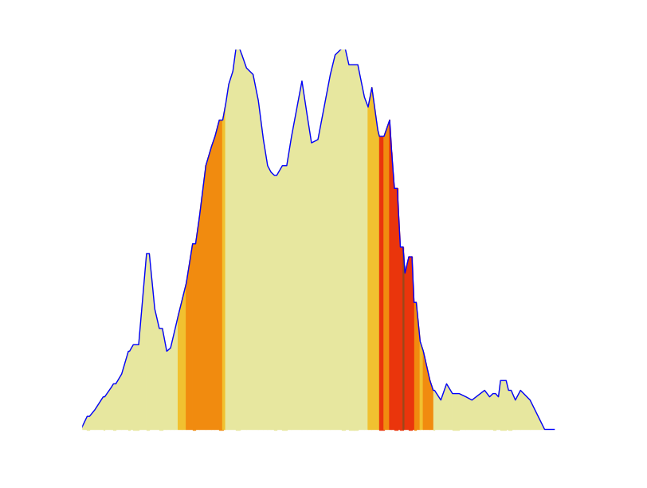
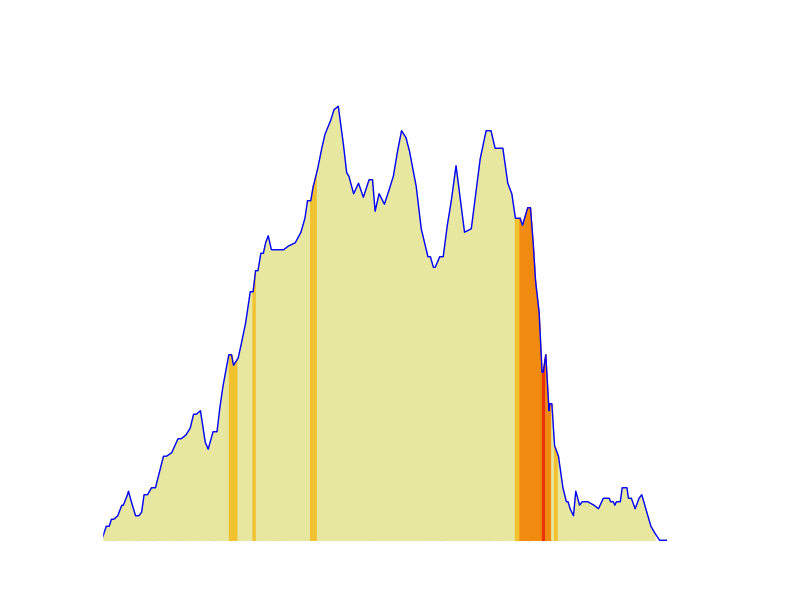
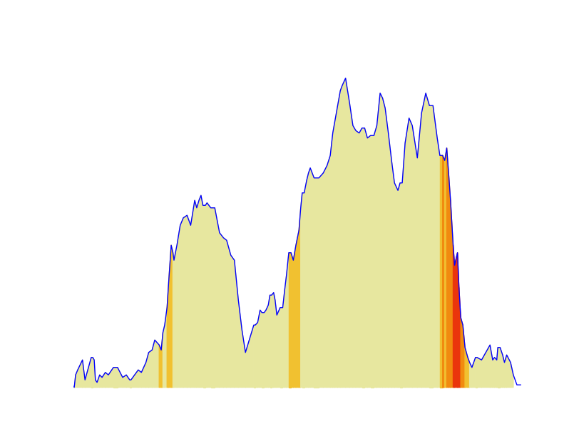

0
Jrs
La Sud-Morvandelle est une nouvelle organisation melant a la fois le sport et l'aspect nature. Multiples activites seront organisees au cours d'une journee unique : randonnee pedestre, randonnee equestre, marche nordique, VTT et trail.
Les departs seront donnes a partir de la Grande Halle de LUZY.
Les inscriptions se feront a l'avance (voir section contact) ou sur place moyennant une majoration.
L'inscription comprend les ravitaillements recontres sur les differents parcours ainsi qu'une assiette gourmande ou sportive au retour.
Make some explanations about the cuts and the required materials.
Make some explanations about the cuts and the required materials.
Des demonstrations auront lieu entre 16 h 00 et 19 h 00.
Les details de l'epreuve chronometree sont les suivants :
Trail 46 km
Randonnee 7 km
Randonnee 10 km
Randonnee 17 km
